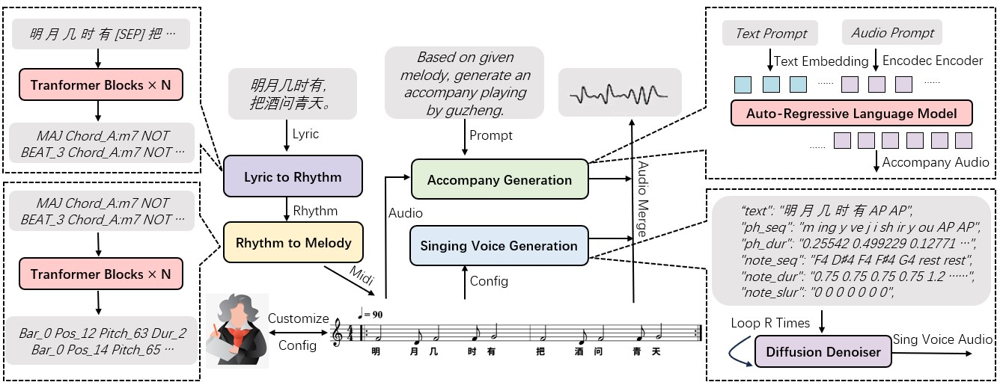

SongSong: A Time Phonograph for Chinese SongCi Music from Thousand of Years Away
Jiliang Hu1,†, Jiajia Li3,†, Ziyi Pan1, Chong Chen4, Zuchao Li2,*, Ping Wang3,*, Lefei Zhang2
1Key Laboratory of Aerospace Information Security and Trusted Computing, Ministry of Education, School of Cyber Science and Engineering, Wuhan University, Wuhan, China,
2School of Computer Science, Wuhan University, Wuhan, China,
3School of Information Management, Wuhan University, Wuhan, China,
4ShenYang Conservatory Of Music, ShenYang, China.
Abstract
Recently, there have been significant advancements in music generation. However, existing models primarily focus on creating modern pop songs, making it challenging to produce ancient music with distinct rhythms and styles, such as ancient Chinese SongCi. In this paper, we introduce SongSong, the first music generation model capable of restoring Chinese SongCi to our knowledge. Our model first predicts the melody from the input SongCi, then separately generates the singing voice and accompaniment based on that melody, and finally combines all elements to create the final piece of music. Additionally, to address the lack of ancient music datasets, we create OpenSongSong, a comprehensive dataset of ancient Chinese SongCi music, featuring 29.9 hours of compositions by various renowned SongCi music masters. To assess SongSong's proficiency in performing SongCi, we randomly select 85 SongCi sentences that were not part of the training set for evaluation against SongSong and music generation platforms such as Suno and SkyMusic. The subjective and objective outcomes indicate that our proposed model achieves leading performance in generating high-quality SongCi music.
Overview
Samples
水调歌头（苏轼）[上阕]
明月几时有？把酒问青天。
不知天上宫阙，今夕是何年。
我欲乘风归去，又恐琼楼玉宇，高处不胜寒。
起舞弄清影，何似在人间。
English translation:
When will there be a bright moon like the Mid Autumn Festival? I held a wine glass and asked the heavens from afar. I don't know what day it is now in the palace in the sky. I want to go back to the sky with the wind to take a look, but I'm worried that the building made of beautiful jade is too high and I can't withstand the cold. Getting up and dancing, enjoying the clear shadow of oneself under the moonlight, the moon palace cannot compare to the warmth of human fireworks.
female voice:
鬲溪梅令·丙辰冬自无锡归作此寓意（姜夔）
好花不与殢香人，浪粼粼。
又恐春风归去绿成阴，玉钿何处寻。
木兰双桨梦中云，小横陈。
漫向孤山山下觅盈盈，翠禽啼一春。
English translation:
Plum blossoms do not allow me, who cherishes flowers, to fully appreciate them. The fine waves blown by the gentle breeze sent me away again. I'm afraid that when I go there, spring has already passed, and the green leaves on the branches are shaded. The long and delicate spring flowers like mother of pearl will never be seen again.
The magnificent oars gently rowed, and a small cloud appeared in my dream, dragging horizontally. It's as if I've reached the foot of the Lonely Mountain, searching everywhere for the blooming flowers. However, I only saw a small bird with green feathers chirping sorrowfully in the spring scenery.
female voice:
翠楼吟·淳熙丙午冬（姜夔）[上阕]
月冷龙沙，尘清虎落，今年汉酺初赐。
新翻胡部曲，听毡幕元戎歌吹。层楼高峙。
看槛曲萦红，檐牙飞翠。
人姝丽，粉香吹下，夜寒风细。
English translation:
The cold light of the bright moon reflects the sandstorms on the border, and the bamboo fences surrounding the city remain silent. This year, the court began to reward the people with drinking and gatherings. Playing the Northern Song, hearing the Marshal's military tent singing clear and melodious. The Anyuan Tower stands tall into the clouds, with its red railings surrounding the eaves, displaying a lush green sky. That beautiful woman is enchanting, with a faint fragrance wafting from her body, gently blown by the wind on a cold night.
male voice:
惜红衣·簟枕邀凉（姜夔）[上阕]
簟枕邀凉，琴书换日，睡余无力。
细洒冰泉，并刀破甘碧。
墙头唤酒，谁问讯、城南诗客。
岑寂，高柳晚蝉，说西风消息。
English translation:
I cool off on the bamboo pillow every day, play the qin and read books to pass the time. Even when I wake up, I feel tired and powerless. Thoroughly clean with spring water and use a sharp knife to cut and chop the fresh and sweet fruits. I carefully arrange my life every day, but I am more lonely than Du Fu, unable to retrieve wine from behind the wall. Who would come to greet me? I am not the poet from the south of the city. My home is lonely and desolate, the west wind is slightly cold, the fallen willow trees, and the mournful cicadas are all telling me that autumn has arrived.
male voice:
徵招（姜夔）[上阕]
潮回却过西陵浦，扁舟仅容居士。
去得几何时，黍离离如此。客途今倦矣。
漫赢得、一襟诗思。
记忆江南，落帆沙际，此行还是。
English translation:
When the tide returned, I crossed the Xiling Ferry. A small boat can only accommodate one person to live in. I only went to Shanzhong for a few days this time, but when I returned, I found the scenery desolate and my homesickness very bitter. I am tired of the life of traveling to a foreign land, with only poetic emotions left to confide in. Recalling those years of traveling to Jiangnan, I also returned to the sandy shore, which sparked such poetic enthusiasm.
male voice: